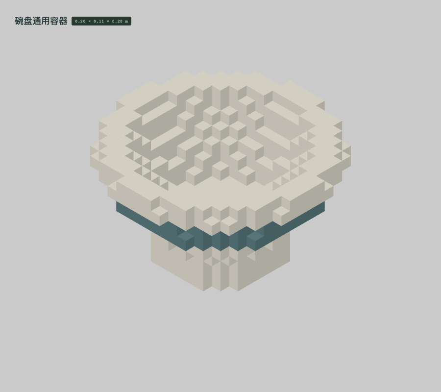
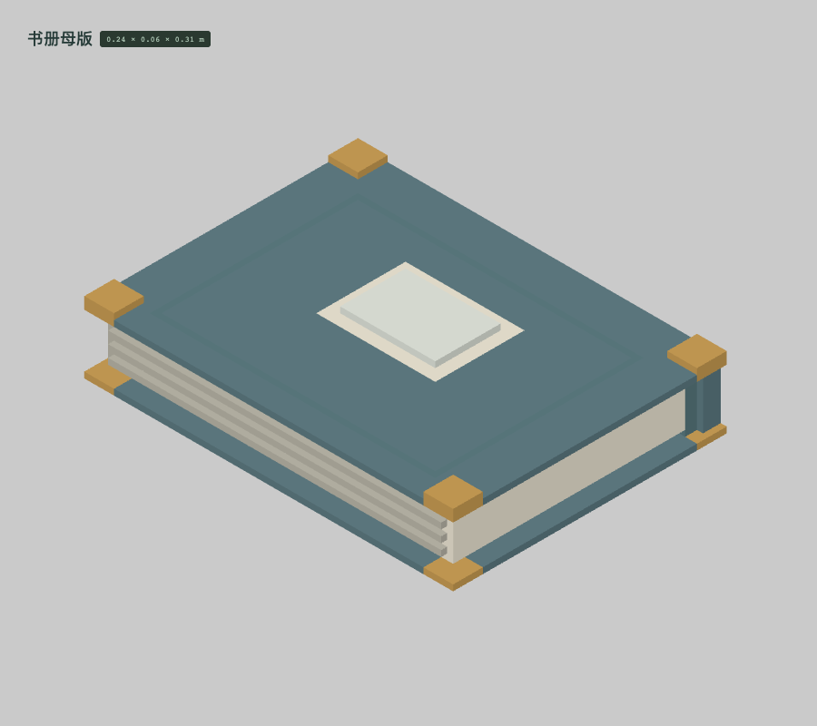
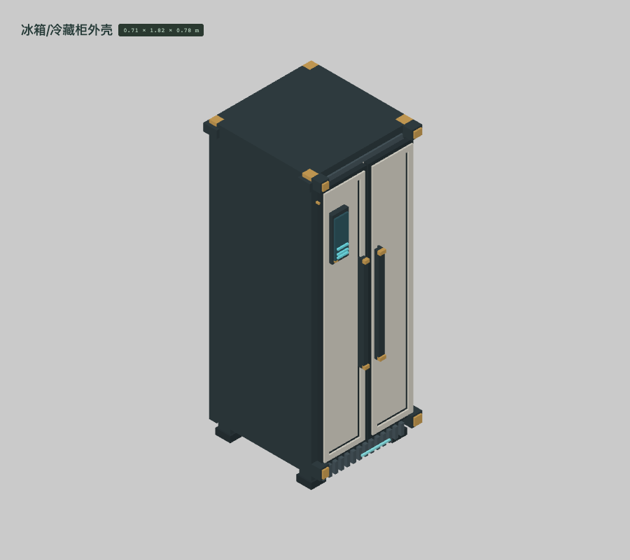
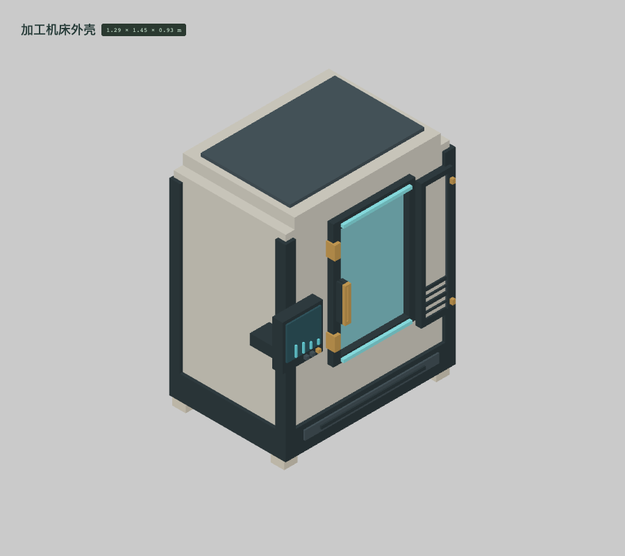
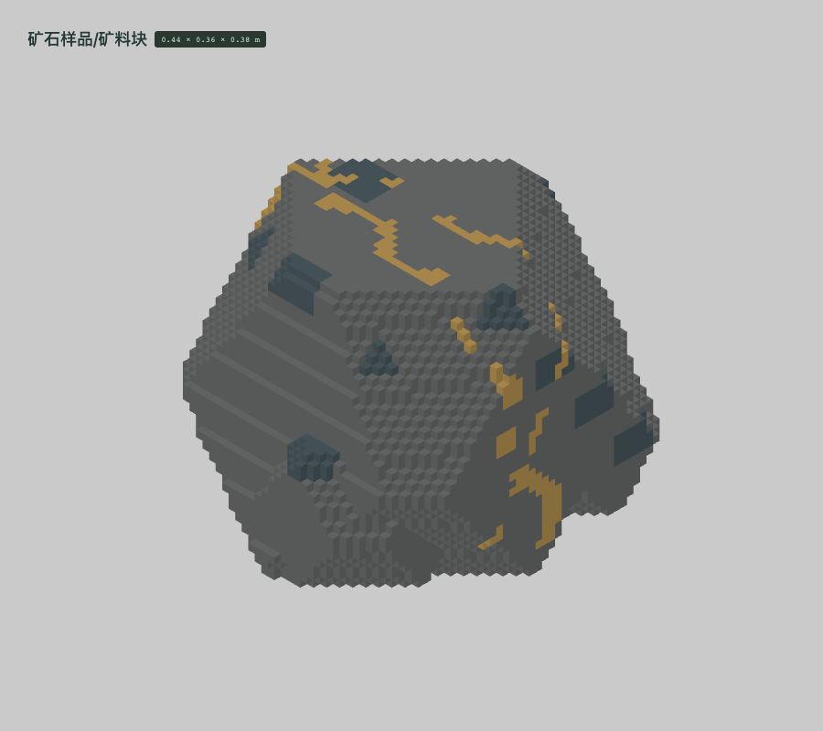
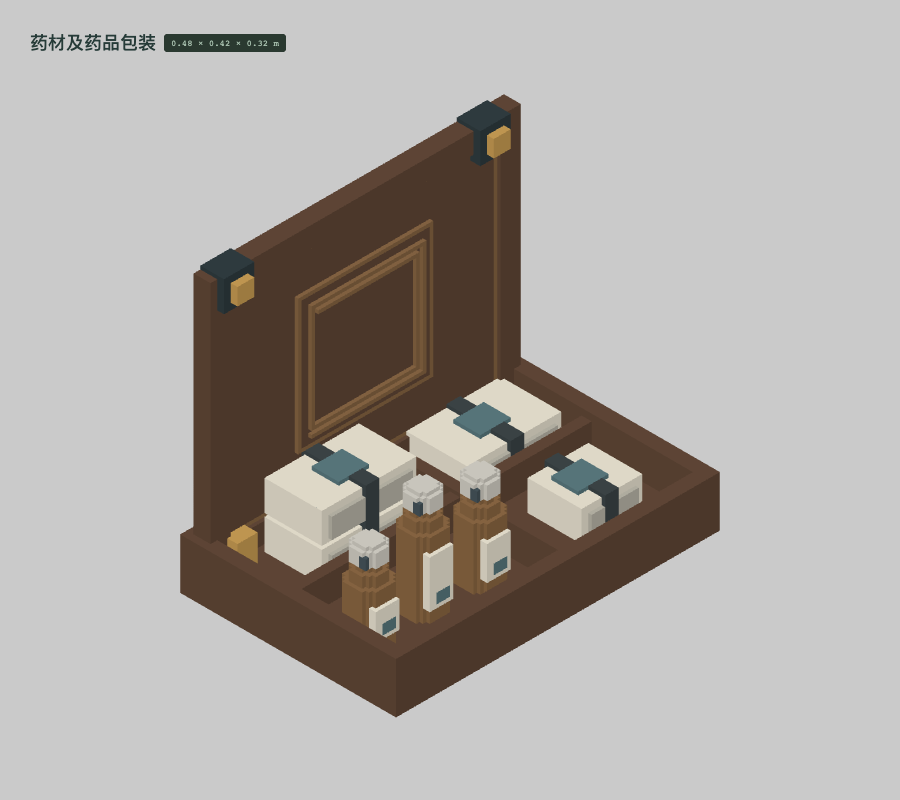

LIFE-046 · 白釉 / 青釉都属于陶瓷
1,060 格改分类。占用位置全部保留。
保存记录：atlas-20261003063047-life-046.ysvox.json

LIFE-057 · 毛巾与织入纹样均为织物
1,690 格改分类。占用位置全部保留。
保存记录：atlas-20261003063047-life-057.ysvox.json

LIFE-106 · 封皮、纸页、书脊布、油墨独立
24,418 格改分类。占用位置全部保留。
保存记录：atlas-20261003063047-life-106.ysvox.json

LIFE-107 · 卷纸与画面油墨分开
24,444 格改分类。占用位置全部保留。
保存记录：atlas-20261003063047-life-107.ysvox.json

LIFE-043 · 涂装金属、塑料内衬、橡胶门封
111,416 格改分类。占用位置全部保留。
保存记录：atlas-20261003063047-life-043.ysvox.json

LIFE-082 · 浅壳是涂装金属，石材只在脚座
363,199 格改分类。占用位置全部保留。
保存记录：atlas-20261003063047-life-082.ysvox.json

LIFE-085 · 矿石基质与矿脉不借硬件金属
7,107 格改分类。占用位置全部保留。
保存记录：atlas-20261003063047-life-085.ysvox.json

LIFE-096 · 纸包、玻璃瓶、塑料盖与标签独立
39,262 格改分类。占用位置全部保留。
保存记录：atlas-20261003063047-life-096.ysvox.json